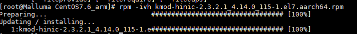
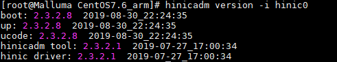

升级网卡驱动
- 下载网卡驱动包。
下载地址：https://support.huawei.com/enterprise/zh/software/250631875-ESW2000134264
- 上传网卡驱动包并解压。图1 上传网卡驱动包

driver为kmod驱动存放目录，firmware为网卡固件存放目录，tools为hinicadm网卡工具目录。
在安装驱动时，根据实际情况选择配套的工具和驱动包。本次选择driver/linux/nic/CentOS7.6_arm/kmod-hinic-2.3.2.1_4.14.0_115-1.el7.aarch64.rpm。
- 安装网卡工具hinicadm，显示如下信息表示网卡工具安装成功。
rpm –ivh tools/linux_arm/nic/hinicadm-2.3.2.1-1.aarch64.rpm
图2 安装网卡工具
- 卸载自带网卡驱动包。
rmmod hinic
- 进入驱动包路径。
cd /driver/linux/nic/CentOS7.6_arm/
- 安装网卡驱动，显示如下信息表示网卡安装成功。
rpm -ivh kmod-hinic-2.3.2.1_4.14.0_115-1.el7.aarch64.rpm
图3 安装网卡驱动
 - 加载驱动包。
modprobe hinic
- 查看驱动版本信息，验证是否安装成功。
hinicadm version -i hinic0
图4 查看驱动版本信息